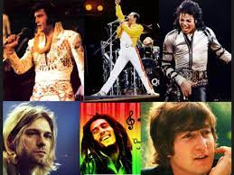

El rock es un amplio género de música popular originado como rock and roll a principios de la década de 1950 en Estados Unidos y que derivaría en un gran rango de diferentes estilos durante mediados de los años 60 y posteriores, particularmente en ese país y Reino Unido.Tiene sus raíces en el rock and roll de los años 50, estilo nacido directamente de géneros como el blues, el rhythm and blues (pertenecientes a la música afroamericana) y el country. También se nutrió fuertemente del blues eléctrico y el folk, además de incorporar influencias del jazz y la música clásica, entre otras fuentes. Instrumentalmente, el rock se ha centrado en la guitarra eléctrica, normalmente como parte de un grupo integrado por batería, bajo, uno o más cantantes y, algunas veces, instrumentos de teclado como el órgano y el piano. Usualmente, el rock se basa en canciones en compás de 4/4 y una estructura verso-estribillo; sin embargo, el género se ha vuelto extremadamente diverso y las características comunes son difíciles de definir. Como la música pop, las letras se centran a menudo en el amor romántico, pero también tratan un rango amplio de otros temas con un enfoque frecuente en lo social, lo personal y lo político.
El rock tuvo como raíces profundas la música de los primeros esclavos africanos que trajeron a las plantaciones de algodón en el sur de los Estados Unidos de Norteamerica, trabajando en los plantíos de Mississippi desde el siglo XVIII. Esta música es adaptada y transformada hasta nuestros días. El rock que ha alcanzado un estatus de mayor compromiso político, con nuevos ritmos e instrumentos.
El rock se clasifica en alternativo, beat, blues rock, country rock, garaje, glam rock, grunge, hard rock, heavy rock, indie rock, pop rock, punk rock, gótico y psicodélico.